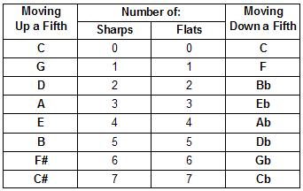

| Using the rule for constructing a Major scale, it is possible to generate 12 distinct scales, each built
on one of the 12 notes that span the range of an octave. |
| Each of these scales has a unique key signature that determines which of the letter-named notes
(A through G) need to be raised or lowered in order to maintain the proper intervallic relationships that
define the Major scale. |
| This required note alteration is indicated by using sharps or flats placed appropriately on the staff,
immediately following the clef. |
| Key signatures contain a specific pattern of either sharps or flats but never both. |
The key signature in the example below shows that for the B scale
we derived above, all instances of the notes B and E must automatically be read as flatted. scale
we derived above, all instances of the notes B and E must automatically be read as flatted. |
|
| Only the key of C contains no sharps or flats. |
| The other key signatures can be methodically derived by moving either up or down in intervals of
a perfect fifth. |
| As the table below illustrates, moving up 7 consecutive fifths yields the family of keys defined by
sharped notes, while moving down in the same fashion generates the family of keys defined by flatted notes. |
|  |
| The progression of key signatures is often depicted as a circle of fifths. |
|
| Applying the rule for the Major scale to each starting note on the circle, we find that the scales associated
with keys that are adjacent to each other differ in the value of only one note. |
| Neighboring keys are therefore considered to be more closely related than keys that are farther away. |
| From a compositional standpoint, it is easiest to move, or modulate, between related keys. |